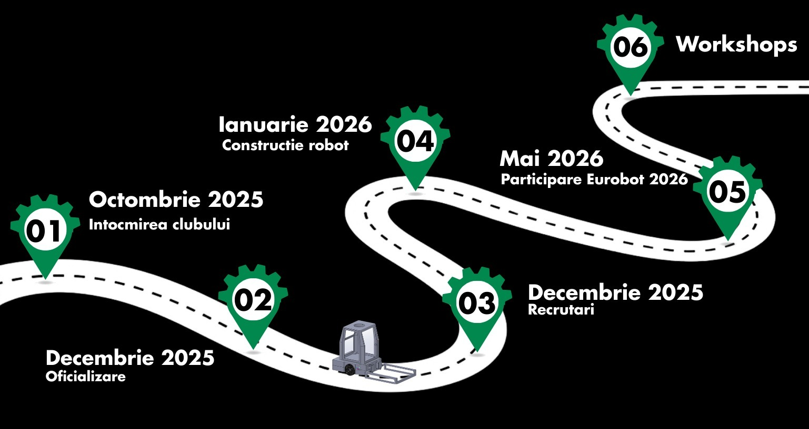

We are TUCaN, a dynamic student robotics club from The Technical University of Cluj-Napoca. Driven by innovation, teamwork, and a passion for building autonomous robots, we have proudly qualified for the international stage of the Eurobot 2026 Competition in La Roche-sur-Yon, France. We are working hard to push the limits of efficiency and creativity on the global stage. Stay tuned as we aim to bring home great achievements this year!